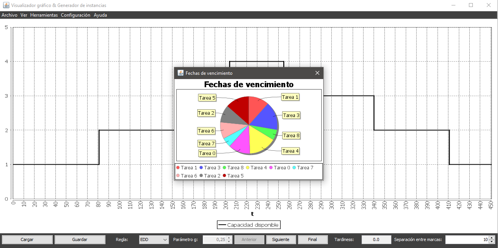

El gráfico de fechas de vencimiento muestra la fecha de vencimiento de cada tarea relativa a la suma de todas las fechas de vencimiento en un gráfico de sectores.
El gráfico de fechas de vencimiento se va actualizando conforme las tareas de planifican, eliminando del gráfico las fechas de vencimiento de aquellas tareas que hayan sido planificadas, hasta quedar vacío (excepto en la planificación manual).